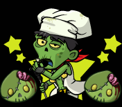

踏破型スペシャルイベント
|
『限定レシピ』 『限定ゾンビ』など
開催期間中にしかゲットできないモノが
手に入るゾ！
◆◇◆◇◆ 開催期間 ◆◇◆◇◆前半戦店レベル16まで 期間中レベル15クリアで「Lv30イノブタさん」 店レベル16以降解放、最大店レベル31 |
◆◇◆◇◆ 報酬 ◆◇◆◇◆今回の目玉はコレだ！★７ジャンヌと食用ガエル  今回の★７ゾンビはなんと！店レベル30クリアでゲットできるぞ！！ さらに初登場食用ガエル！★５までのゾンビに食用ガエルを生贄にすると 共食いレベルが1アップ！！ その他イベントで何がもらえるのか ↓↓チェックしてみよう↓↓ 
|
◆◇◆◇◆ ルール ◆◇◆◇◆敵を全滅させると、よりレベルの高い店に挑戦できます。 こちらが全滅しても敵の体力減少は 引き継ぐので、何度も挑戦しよう！ 全滅させると固定報酬とランダムで ゾンビがドロップします。 ↓↓他詳しい説明をチェックしよう↓↓  |
◆◇◆◇◆ 特攻 ◆◇◆◇◆今回の特攻ゾンビさん！大特攻野郎一覧 ・西の魔法使い ・伝説の女剣士 ・卒業女子大生 ・アーサー（黄金の鎧） ・生徒会長 ・ドワーフ ・イノブタさん ・にのきん ・偽勇者 ・ゆうしゃ ※特攻効果は今回の『モンスターハウス』内でのみ効果を発揮します。 |